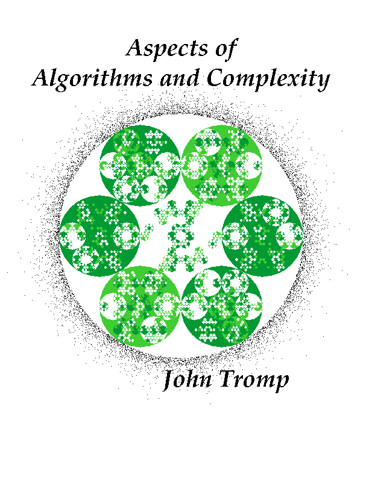

John's Thesis

My thesis is available in either PostScript or
PDF format.
Here's the PostScript source that produces the above:
%!PS-Adobe-2.0 EPSF-2.0
%Title: c4cover
%%Creator: John Tromp (tromp@cwi.nl)
%%CreationDate: Tue Oct 12 1993
%%BoundingBox: 0 50 600 750
%%Pages: 0
%%EndComments
%%EndProlog
300 400 translate
%200 45 {dup mul exch dup mul add 2 div neg} setscreen
2.5 2.5 scale
/m [2 0 1 3 sqrt 0 0] def
/g [0 0.50 1] def /x+ {/x x r add def} bind def /x- {/x x r sub def} bind def
/y+ {/y y r add def } bind def /y- {/y y r sub def } bind def /s 1 string def
/v {t 1 eq {/t currentfile s readhexstring pop 0 get 243 add def} if
g t 3 mod get setgray /t t 3 idiv def
x y m transform r 0 360 arc fill r 1 gt
{ /r r 3 idiv def x- v y+ v x+ v y- v y- v x+ v y+ v x- /r r 3 mul def } if}
bind def /x 0 def /y 0 def /r 81 def /t 1 def v
b6d883a0cbf2f24ef0f265461baef00b1bb68f5fcc0c036dbd03b5e34a45238f180c12001b5103
a6236e1b6b2151143fb33ee5f2bcaab63702a61f143cbfdeeb3cb4470ba545bce780f0f28fddb1
68db80d3f2a194e0ecf2bc6ad0920353abe348e0e9945d5a511dabdebcec654e3b3e18572f0193
f221cae9d14bb93deb9b4eec23e5f2bcaaa43848bb36f2a1d7f2f2f2d7e926e68df2f2eff1f298
e9aeb9edd47a7a9ee9f2f2a0d79e4ae803c6f14a50ad97cbf2bc36205a9dbbddd44dbcc4c0001e
523776d6d7e92624b32224644c76e9f133d6d74a4123b33fefa0e998f27cd4ef5ce82ad7e9f2f2
f2e9eff2bcc5d7d7ecf0f2f2f2f2f2f2f2f23cf2f26596d7e9d7f2bcc5e0cf21d7efef4f62f2f2
f250a4a8f0def0f24a3e5038a4f2f2f2e0e2a0d7d7ec3917bcddf2a1efe9ef45ebf2ecdef2f2f2
f2f2f2f2f24ed7efb9ddf2a1d7f2f2f2d7e9ec9396c7d7d494f2e8e9a0bc0fdddbb1d5ef9b9ca1
e05e842e0c8ae30cc9e9ef4d5e57521c00208cecd6b9c59e340ab706f2a1cb8eadf0d5a10bbd96
d5d6eff1f2e9e9d6cacab635d177e9f1f2a0f2f2ecdfccc9e9f2f2f2e9eff2bc068f18a8a4daf2
507ddbbc4e346b8dd133d4e9778af22251b43748dec34eb5bcec3e0bae010a767ce0e018b30ba3
bdb1689af250bce97cf2d783b523d041c5f1f24eb847ec451babe7143c6b3ea73cb46f74a257b6
daf2507ddee30f120139eb03a6db6e1b010300122448dfdb45bab3651b05551b2444c7dfb603ab
5026a596ebf24af0f2e9cba0b80802
clippath 0 0 r 0 360 arcn clip newpath
0 setgray
0 setlinewidth
8753624 srand
/center { dup stringwidth pop 2 div neg 0 rmoveto show } bind def
/Palatino-BoldItalic findfont 16 scalefont setfont
0 setgray
0 120 moveto
(Aspects of) center
0 100 moveto
(Algorithms and Complexity) center
30 -100 moveto
(John Tromp) center
newpath
9999
{/a rand 5965232 div def
/d rand 2147483648 div ln neg 5 mul r add def
d a cos mul d a sin mul 0.1 0 360 arc fill
} repeat
showpage
%%Trailer
Back to my home page.
john.tromp@gmail.com